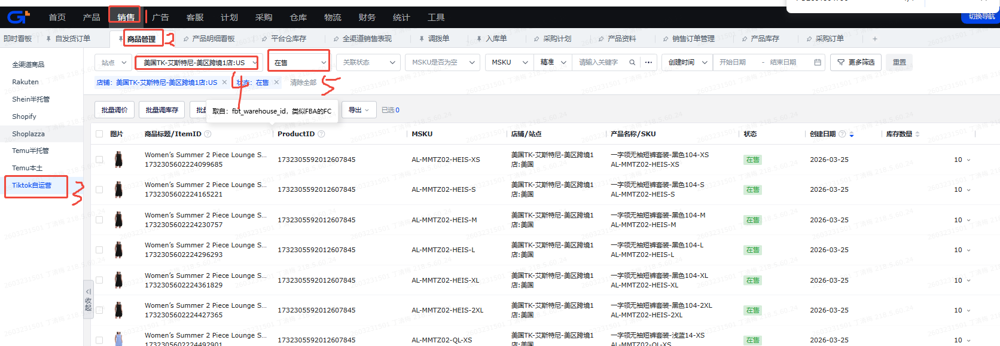

TK库存检查 — 需求文档
以需求为一级维度；源数据取数方式在文末「源数据统一梳理」统一说明。参照 Excel：TK库存检查映射表.xlsx（需求 / 映射表 / 源数据路径）。
一、需求一：TK库存检查-PID&SKU 维度看板
| 优先级 | — |
|---|---|
| 影响面 | 库存检查、库存同步异常排查、跨仓库存核对 |
| 价值 | 1、统一梳理 TikTok 在线商品与各仓库存数据 2、支持快速发现库存少同步、超卖风险、同步异常 3、沉淀 PID&SKU 维度库存检查看板，便于业务排查 |
1.1 需求描述
- 输入：
TIKTOK-在线商品、站点产品库存-自定义导出、TikTok.FBT库存-自定义导出、积加-商品管理-可用库存。 - 目标：用映射表，做一个以 PID&SKU 维度的库存检查看板。
- 核心口径：先以 TikTok 在线商品为商品范围，再按 SKU 关联站点库存、FBT 库存和积加商品管理可用库存，计算总在途、总可用、总库存与库存是否异常。
- 场景：用于排查各仓库存与店铺实际同步库存之间的差异，识别少同步或超卖风险。
1.2 流程
- 从 TIKTOK-在线商品 获取 PID、SKU、站点、产品名称、店铺等基础商品维度。
- 以 TIKTOK-在线商品 为商品基础表，按 PID&SKU 关联 站点产品库存-自定义导出，拆分国内仓、谷仓、万邑通、英国退货仓等不同仓库维度的库存。
- 以 TIKTOK-在线商品 为商品基础表，按 PID&SKU 关联 TikTok.FBT库存-自定义导出，补充 FBT 在途量、FBT 可用量。
- 结合 积加-商品管理-可用库存，基于积加接口获取的数据并按 PID 查询，核对店铺后台已同步库存，形成“我们有的库存”和“实际已同步库存”两套口径。
- 基于映射表公式，计算海外在途库存、海外可用库存、总在途库存、总可用库存、总库存、库存是否异常，以及各仓差异字段。
- 最终产出 TK库存检查 看板，按 PID&SKU 粒度展示各仓库存与异常结果。
1.3 映射表（PID&SKU 看板）
- 最终数据表：
TK库存检查 - 规则：条件/需求公式为空 → 该目标字段为映射，按关联字段 + 源数据表 + 源字段取数；条件/需求公式有值 → 该目标字段为计算或筛选后映射。
- 底表建议：以
TIKTOK-在线商品为商品基础范围，按PID&SKU维度展开。 - 相关表：站点产品库存、TikTok.FBT 库存、积加商品管理可用库存。
- 补充关联规则：
站点产品库存-自定义导出与TIKTOK-在线商品按 PID&SKU 口径关联；原型展示层不输出 SPU 相关字段。 - 补充关联规则：
TikTok.FBT库存-自定义导出与TIKTOK-在线商品按 PID&SKU 口径关联；原型展示层不输出 SPU 相关字段。 - 补充取数规则：
积加-商品管理-可用库存来源于积加接口返回数据，查询口径按 PID 发起，不依赖手工导出文件。
| 类型 | 目标字段 | 计算逻辑（A列） | 关联字段 | 源数据表 | 源字段名称 | 备注 / 可落地情况 |
|---|---|---|---|---|---|---|
| 映射 | 站点 | — | TK库存检查的“PID”&“SKU” = TIKTOK-在线商品的“PID”&“SKU” | TIKTOK-在线商品 | 站点 | 依赖未集成源数据 |
| 映射 | PID | — | TIKTOK-在线商品的“PID” = TIKTOK-在线商品的“PID” | TIKTOK-在线商品 | PID | 依赖未集成源数据；Excel 备注：不是唯一 |
| 映射 | SKU | — | TK库存检查的“PID”&“SKU” = TIKTOK-在线商品的“PID”&“SKU” | TIKTOK-在线商品 | sku | 依赖未集成源数据；Excel 备注：不是唯一 |
| 映射 | SKU名称 | — | TK库存检查的“PID”&“SKU” = TIKTOK-在线商品的“PID”&“SKU” | TIKTOK-在线商品 | 产品名称 | 依赖未集成源数据 |
| 映射 | 店铺 | — | TK库存检查的“PID”&“SKU” = TIKTOK-在线商品的“PID”&“SKU” | TIKTOK-在线商品 | 店铺 | 依赖未集成源数据 |
| 映射 | 采购量 | — | TK库存检查的“SKU” = 站点产品库存-自定义导出的“SKU” | 站点产品库存-自定义导出 | 采购量 | 依赖 站点产品库存-自定义导出；当前未在源数据集成列表登记 |
| 筛选后映射 | 交货在途库存 | 筛选仓库为美国TK-厦门直邮仓和美国TK-国内厦门仓 | TK库存检查的“SKU” = 站点产品库存-自定义导出的“SKU” | 站点产品库存-自定义导出 | 在途量 | 依赖未集成源数据；需支持仓库筛选口径 |
| 筛选后映射 | 国内库存 | 筛选仓库为美国TK-厦门直邮仓和美国TK-国内厦门仓 | TK库存检查的“SKU” = 站点产品库存-自定义导出的“SKU” | 站点产品库存-自定义导出 | 可用量 | 依赖未集成源数据；需支持仓库筛选口径 |
| 筛选后映射 | 三方仓在途量 | 筛选仓库为万邑通:USKY3_Warehouse、万邑通:USWC2_Warehouse、万邑通:USWC_Warehouse、美国TK-艾斯特尼-美国谷仓:美西仓库 | TK库存检查的“SKU” = 站点产品库存-自定义导出的“SKU” | 站点产品库存-自定义导出 | 在途量 | 依赖未集成源数据；需支持多仓汇总 |
| 筛选后映射 | 谷仓-1 | 筛选仓库为美国TK-艾斯特尼-美国谷仓:美西仓库 | 站点产品库存-自定义导出的“SKU” = TK库存检查的“SKU” | 站点产品库存-自定义导出 | 可用量 | “我们有的库存”口径；依赖未集成源数据 |
| 筛选后映射 | 万邑通USKY3-1 | 筛选仓库为万邑通:USKY3_Warehouse | TK库存检查的“SKU” = 站点产品库存-自定义导出的“SKU” | 站点产品库存-自定义导出 | 可用量 | 依赖未集成源数据 |
| 筛选后映射 | 万邑通USWC-1 | 筛选仓库为万邑通:USWC_Warehouse | 站点产品库存-自定义导出的“SKU” = TIKTOK-在线商品的“SKU” | 站点产品库存-自定义导出 | 可用量 | 依赖未集成源数据 |
| 筛选后映射 | 万邑通USWC2-1 | 筛选仓库为万邑通:USWC2_Warehouse | 站点产品库存-自定义导出的“SKU” = TIKTOK-在线商品的“SKU” | 站点产品库存-自定义导出 | 可用量 | 依赖未集成源数据 |
| 筛选后映射 | 国内仓-1 | 筛选仓库为美国TK-厦门直邮仓和美国TK-国内厦门仓 | 站点产品库存-自定义导出的“SKU” = TIKTOK-在线商品的“SKU” | 站点产品库存-自定义导出 | 可用量 | 依赖未集成源数据 |
| 筛选后映射 | 英国退货仓-1 | 筛选仓库为万邑通:UKTW Warehouse和美国TK-艾斯特尼-英国退件仓:英国仓 | 站点产品库存-自定义导出的“SKU” = TIKTOK-在线商品的“SKU” | 站点产品库存-自定义导出 | 可用量 | 依赖未集成源数据 |
| 映射 | FBT在途量 | — | TK库存检查的“SKU” = TikTok.FBT库存-自定义导出的“SKU” | TikTok.FBT库存-自定义导出 | 在途量 | 依赖 TikTok.FBT库存-自定义导出；当前未在源数据集成列表登记 |
| 映射 | FBT可用量 | — | TK库存检查的“SKU” = TikTok.FBT库存-自定义导出的“SKU” | TikTok.FBT库存-自定义导出 | 可用量 | 依赖未集成源数据 |
| 映射 | FBT-1（接口能不能抓到？） | — | TK库存检查的“SKU” = TikTok.FBT库存-自定义导出的“SKU” | TikTok.FBT库存-自定义导出 | 可用量 | 依赖未集成源数据；待确认接口获取能力 |
| 映射 | 谷仓-2 | — | — | 积加-商品管理-可用库存 | 店铺后台实际被同步的库存-接口 | 依赖 积加-商品管理-可用库存；当前未在源数据集成列表登记 |
| 映射 | 万邑通USKY3-2 | — | — | 积加-商品管理-可用库存 | 店铺后台实际被同步的库存-接口 | 依赖未集成源数据 |
| 映射 | 万邑通USWC-2 | — | — | 积加-商品管理-可用库存 | 店铺后台实际被同步的库存-接口 | 依赖未集成源数据 |
| 映射 | 万邑通USWC2-2 | — | — | 积加-商品管理-可用库存 | 店铺后台实际被同步的库存-接口 | 依赖未集成源数据 |
| 映射 | 国内仓-2 | — | — | 积加-商品管理-可用库存 | 店铺后台实际被同步的库存-接口 | 依赖未集成源数据 |
| 映射 | FBA(空着)-2 | — | — | 积加-商品管理-可用库存 | 店铺后台实际被同步的库存-接口 | 依赖未集成源数据 |
| 映射 | 英国退货仓-2 | — | — | 积加-商品管理-可用库存 | 店铺后台实际被同步的库存-接口 | 依赖未集成源数据 |
| 计算 | 海外在途库存 | 海外在途库存 = 三方仓在途量 + 国内库存 | — | — | — | 纯计算字段；前置依赖为“三方仓在途量 + 国内库存” |
| 计算 | 海外可用库存 | 美国站点：谷仓-1 + 万邑通USKY3-1 + 万邑通USWC-1 + 万邑通USWC2-1 + 国内仓-1 + FBT-1 + FBA(空着)-1；英国站点：国内仓-1 + 英国退货仓-1 | — | — | — | 纯计算字段；按站点分别汇总，且依赖部分待确认字段 |
| 计算 | 总在途库存 | 总在途库存 = 海外在途库存 + 三方仓在途量 + FBT在途量 + 交货在途库存 | — | — | — | 纯计算字段；依赖多个未集成源数据字段 |
| 计算 | 总可用库存 | 总可用库存 = 海外可用库存 + 国内库存 | — | — | — | 纯计算字段 |
| 计算 | 总库存 | 总库存 = 总在途库存 + 总可用库存 | — | — | — | 纯计算字段 |
| 计算 | 库存是否异常 | 库存差异大于0代表少同步，小于0代表超卖风险，=0代表同步正确 | — | — | — | 结果判断字段；依赖差异字段计算完成后得出 |
| 计算 | 谷仓-3 | 谷仓-3 = 谷仓-1 - 谷仓-2 | — | — | — | 库存差异字段；前置依赖未全部集成 |
| 计算 | 万邑通USKY3-3 | 万邑通USKY3-3 = 万邑通USKY3-1 - 万邑通USKY3-2 | — | — | — | 库存差异字段 |
| 计算 | 万邑通USWC-3 | 万邑通USWC-3 = 万邑通USWC-1 - 万邑通USWC-2 | — | — | — | 库存差异字段 |
| 计算 | 万邑通USWC2-3 | 万邑通USWC2-3 = 万邑通USWC2-1 - 万邑通USWC2-2 | — | — | — | 库存差异字段 |
| 计算 | 国内仓-3 | 国内仓-3 = 国内仓-1 - 国内仓-2 | — | — | — | 库存差异字段 |
| 计算 | FBT-3 | FBT-3 = FBT-1 - FBT-2 | — | — | — | 库存差异字段；Excel 备注说明 FBT 因多 PID 同步会有异常 |
| 计算 | FBA(空着)-3 | FBA(空着)-3 = FBA(空着)-1 - FBA(空着)-2 | — | — | — | 库存差异字段；但前置字段当前为空 |
| 计算 | 英国退货仓-3 | 英国退货仓-3 = 英国退货仓-1 - 英国退货仓-2 | — | — | — | 库存差异字段 |
| 预留 | FBA(空着)-1 | 当前为空 | — | — | — | 预留字段；当前不可落地 |
| 预留 | FBT-2（积加4月会上暂时空着） | 当前为空 | — | — | — | 预留字段；待后续补充，不可直接落地 |
| 计算 | 总库存-1 | 美国站点：谷仓-1 + 万邑通USKY3-1 + 万邑通USWC-1 + 万邑通USWC2-1 + 国内仓-1 + FBT-1 + FBA(空着)-1；英国站点：国内仓-1 + 英国退货仓-1 | — | — | — | “我们有的库存”汇总字段；依赖部分待确认字段 |
| 计算 | 总库存-2 | 美国站点：谷仓-2 + 万邑通USKY3-2 + 万邑通USWC-2 + 万邑通USWC2-2 + 国内仓-2 + FBT-2 + FBA(空着)-2；英国站点：国内仓-2 + 英国退货仓-2 | — | — | — | “店铺后台实际被同步的库存”汇总字段；依赖部分待确认字段 |
1.4 最终目标结果
需求一达成的目标：TK库存检查-PID&SKU 维度看板，按 PID、SKU 展示商品基础信息、各仓库存、同步库存、库存差异与库存是否异常结果，用于日常库存同步排查；该视图不展示 SPU 相关信息。
页面输出应至少包含以下几类信息：
- 商品基础维度：PID、SKU、SKU名称、站点、店铺。
- 库存来源维度：采购量、交货在途库存、国内库存、三方仓在途量、FBT在途量、FBT可用量，以及谷仓、万邑通、英国退货仓等仓别拆分字段。
- 核对结果维度：总在途库存、总可用库存、总库存、库存是否异常、各仓差异字段（如谷仓-3、国内仓-3等）。
二、需求二：TK库存检查-SPU 维度看板
| 优先级 | — |
|---|---|
| 影响面 | 库存汇总查看、SPU 级异常排查 |
| 价值 | 在 PID&SKU 明细基础上，支持按 SPU 聚合查看库存健康度，便于管理层或业务做汇总判断 |
2.1 需求描述
- 目标：用映射表，做一个以 SPU 维度的看板。
- 底表来源：直接基于需求一产出的 TK库存检查-PID&SKU 维度底表 做二次汇总，不单独重建一套明细来源。
- 聚合方式：以 SPU 为维度做
group by，将需求一中的库存相关字段汇总到 SPU 粒度，形成汇总视角。 - 字段收口：SPU 看板结果中不再展示 PID、SKU、SKU名称；即使底表中存在没有 PID、没有 SKU 的记录，也统一收口在对应 SPU 下面参与汇总。
- 预期用途：快速查看某个 SPU 在不同站点、不同仓的库存状态与异常情况。
2.2 流程
- 先完成 PID&SKU 维度明细数据的梳理与落表。
- 以需求一底表作为唯一输入，按 SPU 做
group by聚合，形成 SPU 维度库存检查看板。 - 需求一中归属于同一 SPU 的多条 PID&SKU 明细，需要合并为一条 SPU 粒度结果；底表中没有 PID、没有 SKU 的记录，也直接并入对应 SPU 汇总结果。
- 各库存数值字段默认按 SPU 粒度进行求和汇总；异常字段不直接沿用明细结果，而是基于 SPU 聚合后的库存结果重新判断。
2.3 映射表（SPU 看板）
- 最终数据表：
TK库存检查-SPU（建议命名，可按项目实际 ADS / 看板表规范调整） - 构建方式：以上一节需求一产出的
TK库存检查明细底表为输入，按SPU粒度聚合生成。 - 分组主键：
SPU。SPU 看板结果中不保留PID、SKU、SKU名称粒度字段。 - 特殊口径：若明细记录缺失
PID或缺失SKU，但能够落到某个SPU，则仍纳入该SPU的汇总结果，不因 PID/SKU 缺失而剔除。 - 聚合规则：库存类数值字段默认按
sum()汇总；状态/判断类字段基于汇总后的差异结果重新计算。
| 类型 | SPU 看板字段 | 来源 | 聚合/计算口径 | 备注 |
|---|---|---|---|---|
| 分组字段 | SPU | 需求一底表 | 按 SPU 分组 | SPU 看板唯一主维度 |
| 映射/汇总 | SPU名称 | 需求一底表 | 同一 SPU 下建议取统一名称；若存在不一致，需以后续口径定义为准 | 建议保持与 SPU 一一对应 |
| 汇总 | 站点、店铺 | 需求一底表 | 同一 SPU 下若跨多个站点/店铺，可按看板展示需要做去重汇总或拆分筛选 | 当前以需求一底表原始归属为准 |
| 汇总 | 采购量 | 需求一底表 | 按 sum() 聚合 | 数量类字段 |
| 汇总 | 交货在途库存 | 需求一底表 | 按 sum() 聚合 | 数量类字段 |
| 汇总 | 国内库存 | 需求一底表 | 按 sum() 聚合 | 数量类字段 |
| 汇总 | 三方仓在途量 | 需求一底表 | 按 sum() 聚合 | 数量类字段 |
| 汇总 | 谷仓-1 | 需求一底表 | 按 sum() 聚合 | “我们有的库存”仓别字段 |
| 汇总 | 万邑通USKY3-1 | 需求一底表 | 按 sum() 聚合 | “我们有的库存”仓别字段 |
| 汇总 | 万邑通USWC-1 | 需求一底表 | 按 sum() 聚合 | “我们有的库存”仓别字段 |
| 汇总 | 万邑通USWC2-1 | 需求一底表 | 按 sum() 聚合 | “我们有的库存”仓别字段 |
| 汇总 | 国内仓-1 | 需求一底表 | 按 sum() 聚合 | “我们有的库存”仓别字段 |
| 汇总 | 英国退货仓-1 | 需求一底表 | 按 sum() 聚合 | “我们有的库存”仓别字段 |
| 汇总 | 采购量、交货在途库存、国内库存、三方仓在途量、FBT在途量、FBT可用量 | 需求一底表 | 按 sum() 聚合 | 均为库存数量类字段 |
| 汇总 | FBT在途量 | 需求一底表 | 按 sum() 聚合 | 平台仓库存字段 |
| 汇总 | FBT可用量 | 需求一底表 | 按 sum() 聚合 | 平台仓库存字段 |
| 汇总 | FBT-1（接口能不能抓到？） | 需求一底表 | 按 sum() 聚合 | 待确认接口获取能力 |
| 汇总 | 谷仓-2 | 需求一底表 | 按 sum() 聚合 | 店铺后台实际被同步库存字段 |
| 汇总 | 万邑通USKY3-2 | 需求一底表 | 按 sum() 聚合 | 店铺后台实际被同步库存字段 |
| 汇总 | 万邑通USWC-2 | 需求一底表 | 按 sum() 聚合 | 店铺后台实际被同步库存字段 |
| 汇总 | 万邑通USWC2-2 | 需求一底表 | 按 sum() 聚合 | 店铺后台实际被同步库存字段 |
| 汇总 | 国内仓-2 | 需求一底表 | 按 sum() 聚合 | 店铺后台实际被同步库存字段 |
| 汇总 | FBA(空着)-2 | 需求一底表 | 按 sum() 聚合 | 当前为空，预留字段 |
| 汇总 | 英国退货仓-2 | 需求一底表 | 按 sum() 聚合 | 店铺后台实际被同步库存字段 |
| 汇总 | 谷仓-1 / -2 / -3、万邑通USKY3-1 / -2 / -3、万邑通USWC-1 / -2 / -3、万邑通USWC2-1 / -2 / -3、国内仓-1 / -2 / -3、FBT-1 / -2 / -3、FBA(空着)-1 / -2 / -3、英国退货仓-1 / -2 / -3 | 需求一底表 | 按 sum() 聚合 | 仓别差异字段在 SPU 粒度汇总展示 |
| 汇总 | 谷仓-3 | 需求一底表 | 按 sum() 聚合 | 库存差异字段 |
| 汇总 | 万邑通USKY3-3 | 需求一底表 | 按 sum() 聚合 | 库存差异字段 |
| 汇总 | 万邑通USWC-3 | 需求一底表 | 按 sum() 聚合 | 库存差异字段 |
| 汇总 | 万邑通USWC2-3 | 需求一底表 | 按 sum() 聚合 | 库存差异字段 |
| 汇总 | 国内仓-3 | 需求一底表 | 按 sum() 聚合 | 库存差异字段 |
| 汇总 | FBT-3 | 需求一底表 | 按 sum() 聚合 | 库存差异字段；Excel 备注说明 FBT 因多 PID 同步会有异常 |
| 汇总 | FBA(空着)-1 | 需求一底表 | 按 sum() 聚合 | 当前为空，预留字段 |
| 汇总 | FBA(空着)-3 | 需求一底表 | 按 sum() 聚合 | 当前为空，预留差异字段 |
| 汇总 | FBT-2（积加4月会上暂时空着） | 需求一底表 | 按 sum() 聚合 | 当前为空，预留字段 |
| 汇总 | 英国退货仓-3 | 需求一底表 | 按 sum() 聚合 | 库存差异字段 |
| 重新计算 | 海外在途库存、海外可用库存、总在途库存、总可用库存、总库存、总库存-1、总库存-2 | 需求一底表聚合结果 | 基于 SPU 粒度汇总后的基础库存字段重新计算 | 不建议直接混用明细判断结果 |
| 重新计算 | 海外在途库存 | 需求一底表聚合结果 | SPU 粒度：三方仓在途量 + 国内库存 | 沿用需求一公式，在聚合后重新计算 |
| 重新计算 | 海外可用库存 | 需求一底表聚合结果 | 按站点口径汇总各仓可用库存后重新计算 | 依赖部分待确认字段 |
| 重新计算 | 总在途库存 | 需求一底表聚合结果 | 海外在途库存 + 三方仓在途量 + FBT在途量 + 交货在途库存 | 聚合后重算 |
| 重新计算 | 总可用库存 | 需求一底表聚合结果 | 海外可用库存 + 国内库存 | 聚合后重算 |
| 重新计算 | 总库存 | 需求一底表聚合结果 | 总在途库存 + 总可用库存 | 聚合后重算 |
| 重新计算 | 总库存-1 | 需求一底表聚合结果 | 按“我们有的库存”仓别字段聚合后重算 | 依赖部分待确认字段 |
| 重新计算 | 总库存-2 | 需求一底表聚合结果 | 按“店铺后台实际被同步的库存”仓别字段聚合后重算 | 依赖部分待确认字段 |
| 重新判断 | 库存是否异常 | 需求一底表聚合结果 | 按 SPU 粒度汇总后的库存差异重新判断：差异大于 0 为少同步，小于 0 为超卖风险，等于 0 为同步正确 | SPU 层级单独输出判断结果 |
2.4 最终目标结果
需求二达成的目标：TK库存检查-SPU 维度看板，基于需求一底表按 SPU 聚合后，汇总展示各站点、各仓库存与异常情况，为库存汇总排查提供高层视图。
SPU 看板中不展示 PID、SKU、SKU名称；所有可归属到同一 SPU 的明细，无论是否缺少 PID 或 SKU，均统一收口到该 SPU 结果中。
三、源数据统一梳理
以下为当前库存检查需求涉及的源数据，统一说明取数方式、用途，以及是否已经在 源数据集成列表 中登记。
当前对照文件：
本节中的“已集成 / 未登记”判断，以该清单当前内容为准：
bi/tkDashboard/技术方案/源数据统一梳理-ODS.html。本节中的“已集成 / 未登记”判断，以该清单当前内容为准：
- 已在源数据集成列表中存在：说明已有对应 ODS 表或至少已有统一登记口径。
- 当前未在源数据集成列表中登记：说明库存检查需求已识别出该源数据，但现有总清单中尚未补充对应 ODS 表名。
3.1 TIKTOK-在线商品
| 项目 | 说明 | 集成说明 |
|---|---|---|
| 来源 | 积加后台 | 当前未在源数据集成列表中登记 |
| 步骤 1 | 积加 → 销售 → 商品管理 → Tiktok自运营 → 筛选店铺 → 筛选在售 | 现有总清单中没有以 TIKTOK-在线商品 为名称的 ODS 记录 |
| 步骤 2 | 导出 → 导出查询结果 | 若后续确认与现有商品主数据复用，需要补充统一命名口径 |
| 店铺范围 | 美国TK-艾斯特尼-美区跨境1店、美国TK-艾斯特尼-美区跨境2店、美国TK-艾斯特尼-美区跨境3店、美国TK-艾斯特尼-英国直邮店:GB | — |
| 用途 | 提供 SPU、站点、父产品名称、PID、SKU、产品名称、店铺等商品基础信息，是库存检查的商品维度基础表。 | 业务语义上与“商品主数据”接近，但是否可复用 全渠道商品表 → ods_product_api_jijia_omnichannel_product_df，当前待确认 |

截图 1：TIKTOK-在线商品，步骤 1，进入积加后台销售 → 商品管理 → Tiktok自运营，并按店铺、在售状态筛选。

截图 2：TIKTOK-在线商品，步骤 2，导出查询结果。
3.2 站点产品库存-自定义导出
| 项目 | 说明 | 集成说明 |
|---|---|---|
| 来源 | 积加后台 | 当前未在源数据集成列表中登记 |
| 步骤 1 | 积加 → 仓库 → 产品库存 → 站点产品库存 → 筛选仓库 → 筛选共享 | 现有总清单中没有“站点产品库存”对应的 ODS 表 |
| 仓库范围 | 美区：美国TK-国内厦门仓、万邑通:USKY3_Warehouse、万邑通:USWC2_Warehouse、万邑通:USWC_Warehouse、美国TK-艾斯特尼-美国谷仓:美西仓库、美国TK-厦门直邮仓；英区：美国TK-国内厦门仓、美国TK-厦门直邮仓、美国TK-艾斯特尼-英国退件仓:英国仓、万邑通:UKTW Warehouse | — |
| 步骤 2 | 导出 → 自定义导出 | 后续若正式建设数仓链路，建议优先补充对应 ODS 表登记 |
| 用途 | 提供采购量、在途量、可用量等仓库库存字段，是交货在途库存、国内库存、三方仓在途量、谷仓/万邑通/英国退货仓库存等字段的主要来源。 | 这是库存检查场景下最核心的库存明细来源 |

截图 3：站点产品库存-自定义导出，步骤 1，进入积加后台仓库 → 产品库存 → 站点产品库存，并按仓库、共享状态筛选。

截图 4：站点产品库存-自定义导出，步骤 2，自定义导出操作截图。
3.3 TikTok.FBT库存-自定义导出
| 项目 | 说明 | 集成说明 |
|---|---|---|
| 来源 | 积加后台 | 当前未在源数据集成列表中登记 |
| 步骤 1 | 积加 → 仓库 → 平台仓库存 → TikTok自运营 → 筛选仓库为美国TK-艾斯特尼-美区跨境1店:US_FBT → 筛选同步状态为正常 | 现有总清单里没有 TikTok FBT 库存导出对应的 ODS 表 |
| 步骤 2 | 导出 → 自定义导出 | 后续若补齐接口或导出链路，建议同步补充源数据集成登记 |
| 用途 | 提供 FBT 在途量、FBT 可用量，用于补充平台仓库存维度。 | 当前需求和原型中均标注了 FBT 字段存在待确认项 |

截图 5：TikTok.FBT库存-自定义导出，步骤 1，进入平台仓库存 → TikTok自运营，并按 US_FBT 仓库、同步状态筛选。

截图 6：TikTok.FBT库存-自定义导出，步骤 2，自定义导出操作截图。
3.4 积加-商品管理-可用库存
| 项目 | 说明 | 集成说明 |
|---|---|---|
| 来源 | 积加后台接口 | 当前未在源数据集成列表中登记 |
| 实现方式 | 基于积加接口获取库存相关数据，查询口径按 PID 发起 | 现有总清单中没有“积加-商品管理-可用库存”对应的 ODS 表；该项应按接口型源数据补充登记 |
| 用途 | 作为店铺后台“实际被同步的库存”口径来源，对应谷仓-2、万邑通USKY3-2、万邑通USWC-2、万邑通USWC2-2、国内仓-2、FBA(空着)-2、英国退货仓-2 等字段。 | 该数据是“店铺后台已同步库存”口径的关键来源，与“我们有的库存”做对比后才能判断同步差异，建议后续补齐接口登记、请求参数与返回字段说明 |

截图 7：积加-商品管理-可用库存，对应库存数量页面的获取路径截图。
3.5 获取可用的仓库列表
| 项目 | 说明 | 集成说明 |
|---|---|---|
| 来源 | 积加后台接口 | 当前未在源数据集成列表中登记 |
| 实现方式 | 基于积加后台接口能力获取当前账号/业务范围下可用的仓库列表，不依赖手工导出 | 当前仓库相关源数据主要来自导出文件；该项需补充为接口型源数据 |
| 返回内容 | 仓库 ID、仓库名称、仓库类型、仓库所属站点/业务范围等基础信息（以接口实际返回为准） | 建议后续在接口文档中补充字段定义与请求示例 |
| 用途 | 为“站点产品库存-自定义导出”“积加-商品管理-可用库存”等库存数据提供仓库筛选候选集与仓库名称标准口径，支撑前端筛选项、仓库归类及仓库映射维护 | 该列表属于库存检查场景的基础维表/字典数据，不直接产出库存数值 |
| 备注 | 若后续正式建设数仓链路，建议将该接口结果沉淀为仓库维表，并与库存事实数据共用统一仓库主数据口径 | 建议补充接口登记、调度频率与增量/全量同步策略 |
四、需求与数据对照小结
| 需求 | 核心动作 | 使用的源数据 | 产出 |
|---|---|---|---|
| 需求一 | 按 PID&SKU 维度映射商品与库存字段，并计算异常结果 | TIKTOK-在线商品 + 站点产品库存-自定义导出 + TikTok.FBT库存-自定义导出 + 积加-商品管理-可用库存 + 获取可用的仓库列表 | TK库存检查-PID&SKU 维度看板 |
| 需求二 | 基于需求一底表按 SPU 聚合，缺失 PID/SKU 的记录也按 SPU 收口汇总 | 同上 | TK库存检查-SPU 维度看板 |